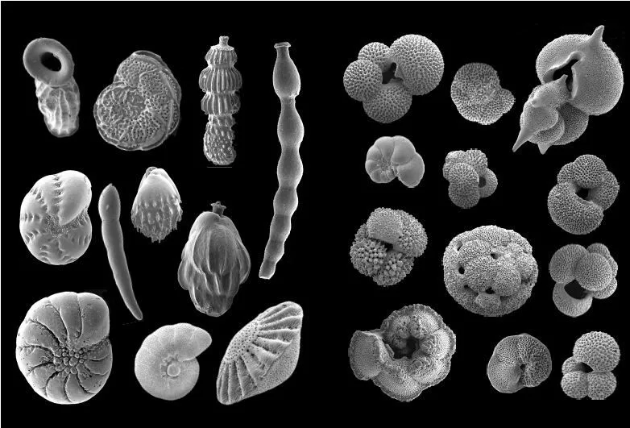
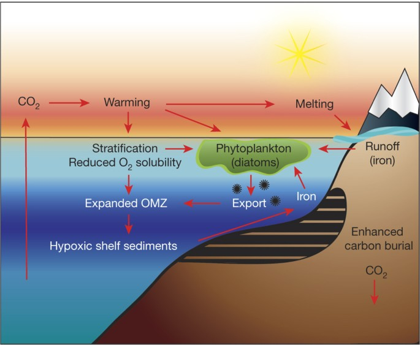
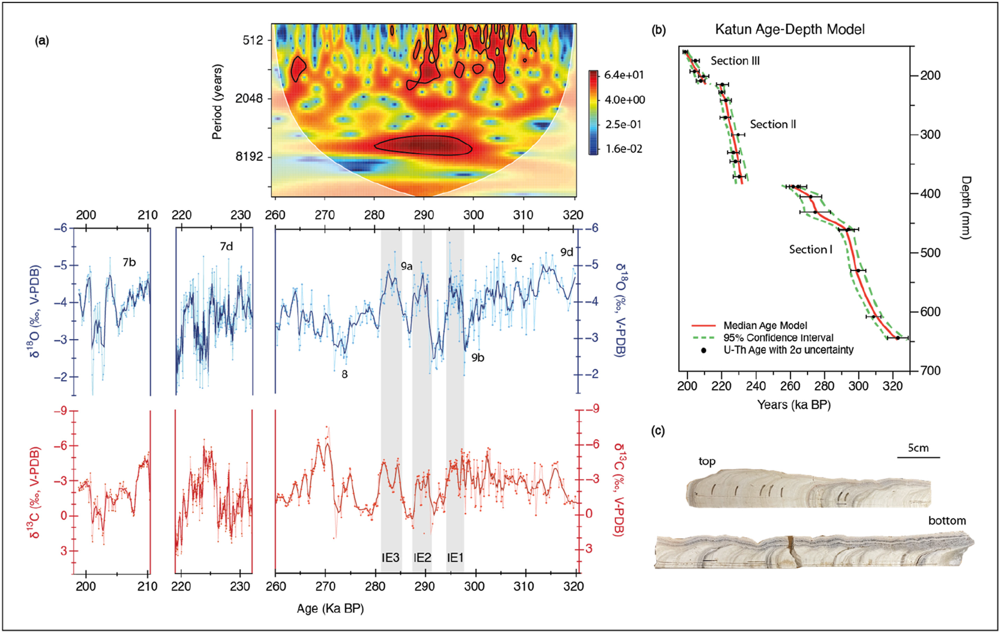

Research Areas
Carbon Cycling and Ocean Ventilation in North Pacific
The ocean functions as the largest naturally active reservoir of CO₂ on Earth. Variations in deep-water formation and the ventilation of the ocean interior can strongly influence atmospheric carbon levels, either dampening or amplifying the greenhouse effect. At present, the ocean takes up over 20% of human-generated CO₂ emissions, though this capacity is declining as warming and acidification progress. Owing to water’s high heat capacity, ocean circulation also plays a key role in redistributing heat from the tropics toward the poles. I use radiocarbon (¹⁴C) in foraminifera and other environmental tracers to reconstruct past changes in ocean ventilation and circulation, and to assess how these shifts have shaped heat transport and the global carbon cycle.

Figure source: Praetorius et al 2015, Nature.
Marine Productivity and Hypoxia
Changes in marine primary productivity drive the ocean’s “biological pump,” transferring carbon from the surface to the deep ocean. This highly efficient process influences both atmospheric CO₂ levels and the oxygen content of the ocean interior. When productivity is elevated, the increased flux of sinking organic matter fuels bacterial respiration, which can deplete oxygen and lead to hypoxic conditions. Such hypoxia can significantly impact marine ecosystems, including commercially valuable species like crabs and bottom-dwelling fish. My research applies a range of approaches to reconstruct when hypoxic events occurred in the past and to identify the mechanisms behind them.

Figure source: Praetorius et al 2015, Nature.
Biogeochemical Cycling and Primary Productivity in Sundan Shelf Seas
The tropical Sunda Shelf seas are a dynamic region for coastal biogeochemical cycling, strongly influenced by monsoon-driven circulation and substantial terrestrial inputs of nutrients and organic matter. These inputs can stimulate primary productivity, but also alter light availability and ecosystem metabolism. However, the temporal variability and controls on productivity in this region remain poorly constrained. My research uses high-frequency dissolved oxygen measurements from an autonomous buoy in the Singapore Strait to quantify gross primary production, respiration, and net ecosystem production over seasonal timescales. By linking these processes to changes in monsoon forcing, nutrient supply, and optical conditions, this work provides insight into how land–ocean interactions regulate productivity and carbon cycling in tropical shelf systems.
Figure source: Praetorius et al 2015, Nature.
Hydroclimate Variability Reconstruction in Tropical Regions
For my master's research, I developed the oldest speleothem isotope record from Central America and the Caribbean — a high-resolution stalagmite ("Katún") spanning ~198–322 ka BP. The record reveals that Caribbean hydroclimate was primarily driven by tropical ocean-atmosphere dynamics rather than precessional insolation, with CO₂-mediated sea surface warming and AMOC-paced ITCZ shifts as the dominant controls across both glacial–interglacial and millennial timescales.

Figure: Katún stalagmite, age model and its oxygen (δ18O) and carbon (δ13C) isotope records.
Selected Publications
(* denotes equal contribution)